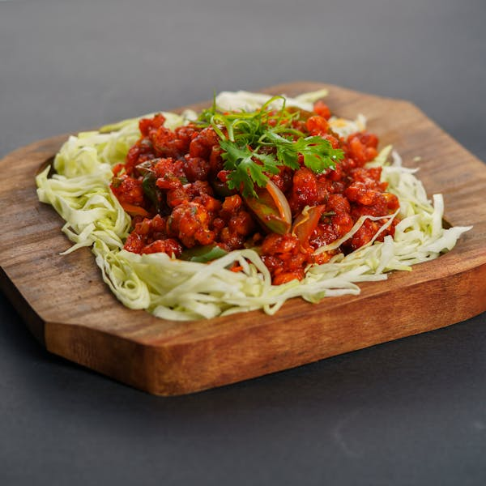

Nimbu Pani:
A mild curry with a smooth sauce made with coconut milk, almonds, cardamom, and cinnamon
Mango Lassi:

Indian appetizer made with cauliflower, which is marinated in a spiced batter, deep-fried to a crispy texture, and then tossed in a tangy, flavorful sauce.
Assam Tean:

Indo-Chinese dish made from finely chopped vegetables like cabbage, carrots, and beans, which are mixed with flour, formed into small balls, and deep-fried to a crispy golden-brown texture.
Chai Masala:

Indo-Chinese dish made with sweet corn kernels that are combined with seasonings and shaped into small fritters or balls.